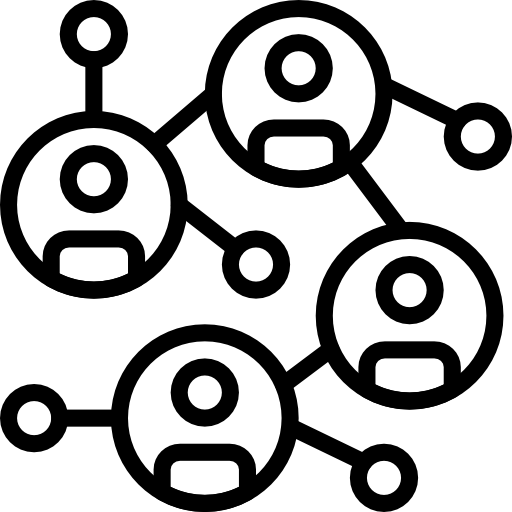
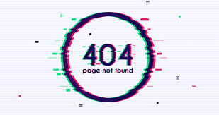
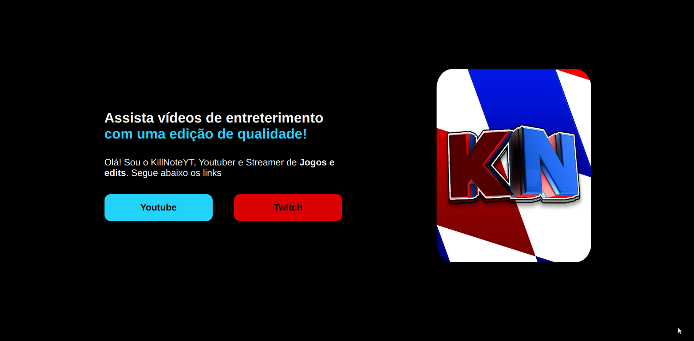
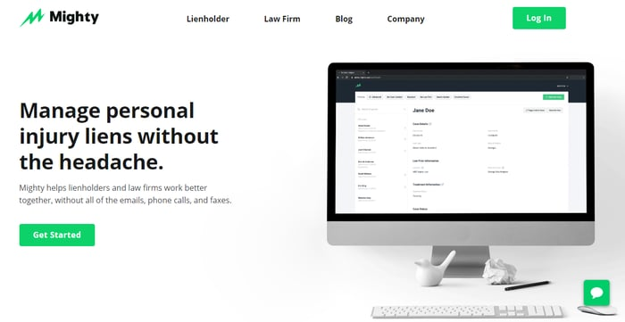

Sites pessoais
Portfólios e páginas de apresentação.
Serviços demonstrativos
Portfólios e páginas de apresentação.

Páginas institucionais para pequenos negócios.

Espaço preservado da proposta acadêmica original.
Modelos


Sobre a versão
Esta versão preserva a proposta original do TCC e refatora a estrutura para demonstrar responsividade, Bootstrap, HTML semântico, CSS organizado e manutenção de código.
Conhecer o projeto